Le constat
On s’entraîne beaucoup, on voit rarement ses progrès. Les apps empilent des chiffres sans les expliquer.
L’app de suivi sportif qui transforme course, muscu, rando, sommeil et nutrition en une progression visible.
On s’entraîne beaucoup, on voit rarement ses progrès. Les apps empilent des chiffres sans les expliquer.
Tous les sports réunis dans une seule app, chaque séance transformée en progression. Et MAX pour accompagner.
Des agents IA spécialisés conçoivent, codent et illustrent. Les règles sont fixées en amont, chaque résultat est validé.
Les écrans de la nouvelle version.


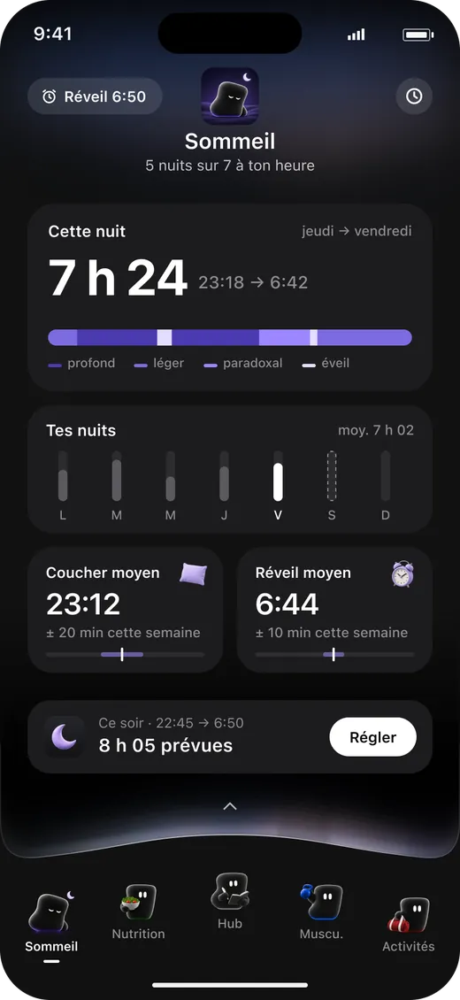
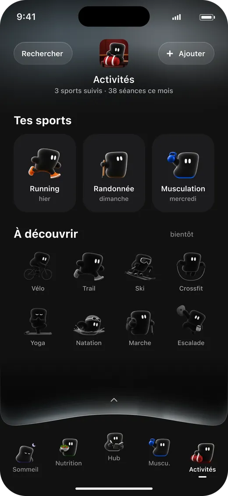

Chaque sport a son MAX.
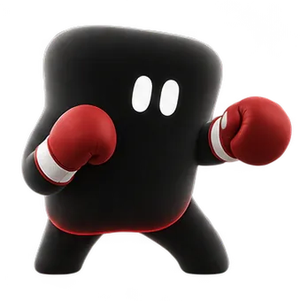
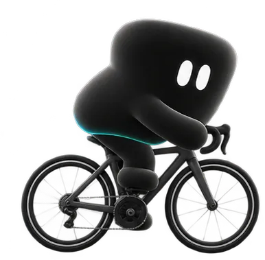
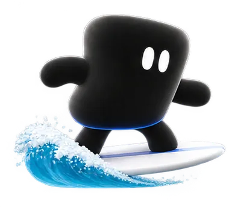
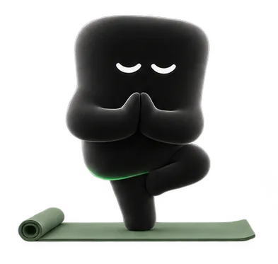
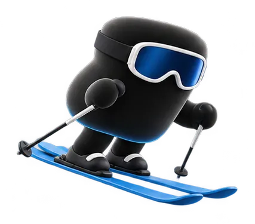
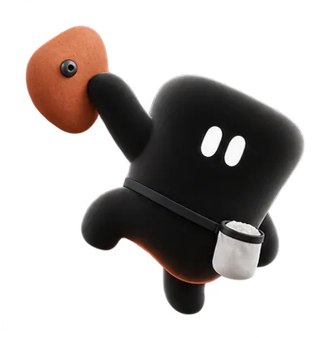
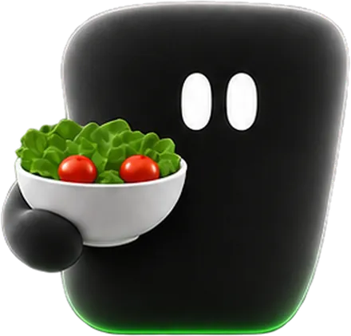

Chaque cap franchi a son badge.
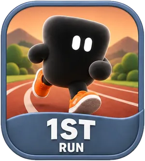
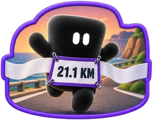
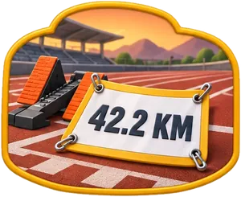
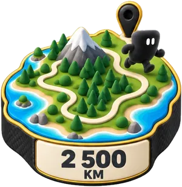
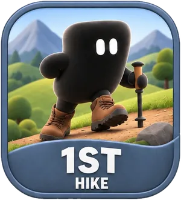
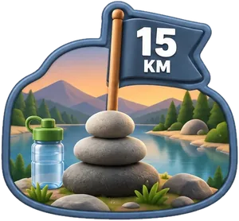
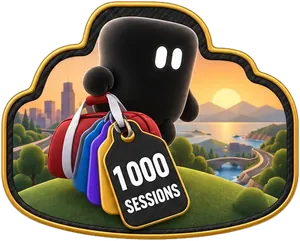
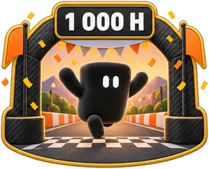
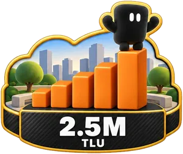
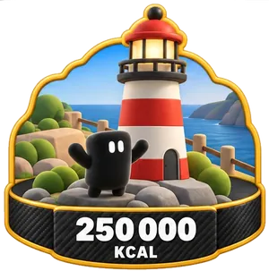
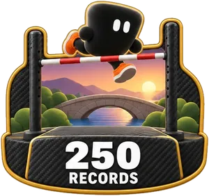
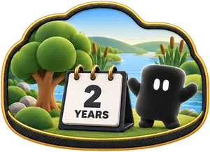
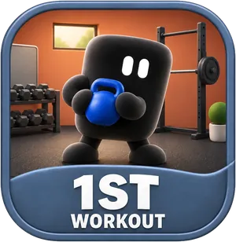
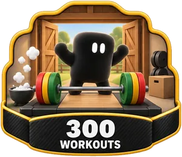
Quelques-uns des objets qui illustrent l’app.
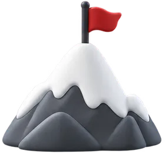
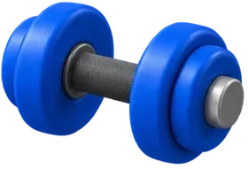
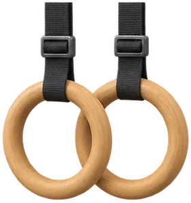
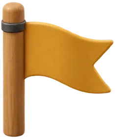
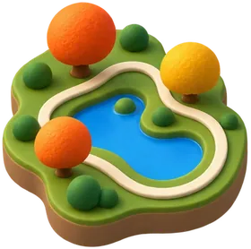
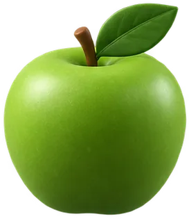
Avant la refonte.
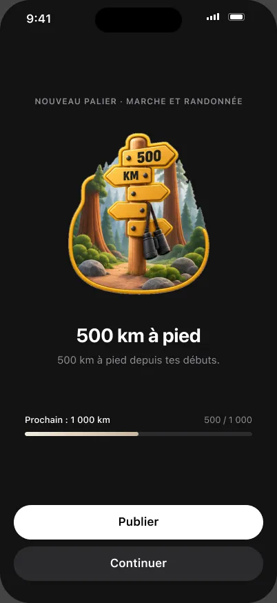
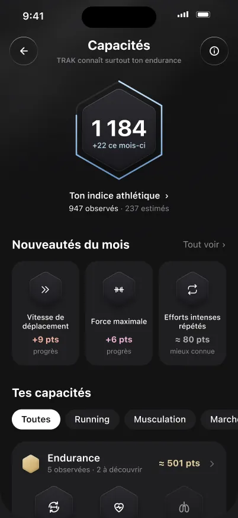
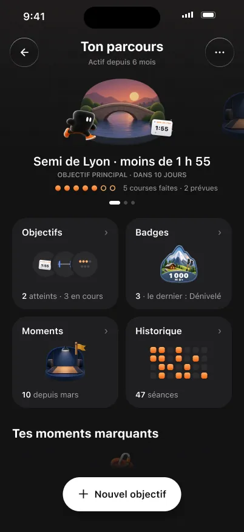
Les affiches de la marque, générées pour TRAK.
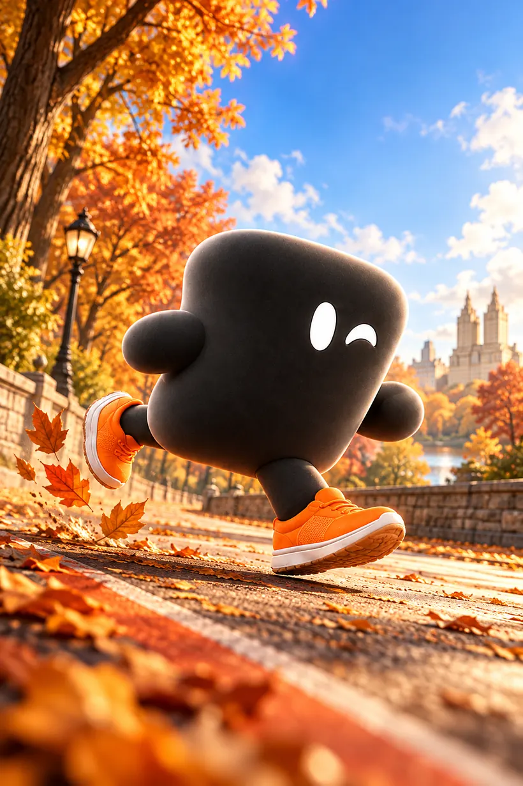
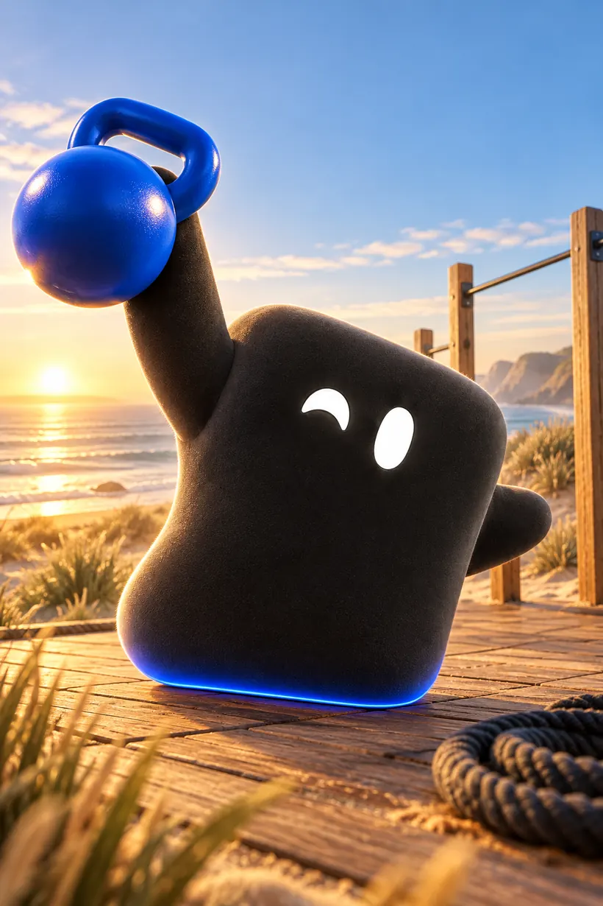
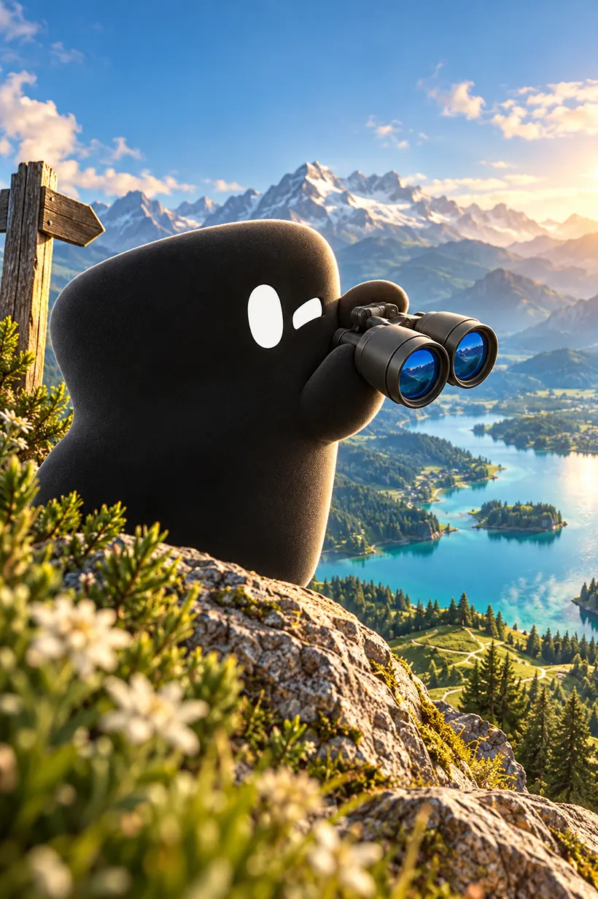
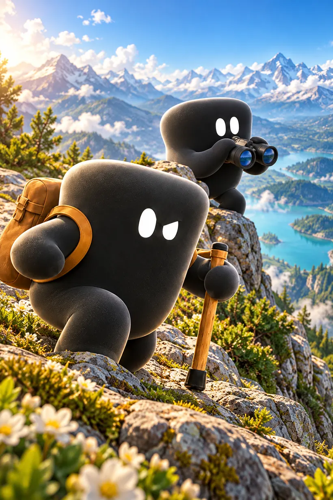
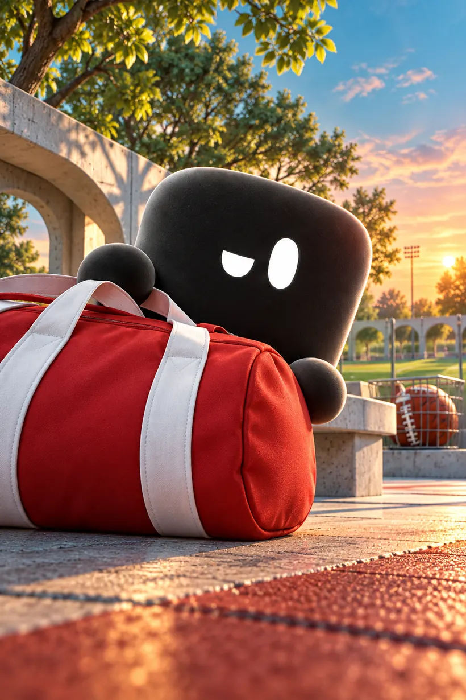

Ce que ça prouve
Une petite équipe et des agents IA bien dirigés peuvent concevoir, coder et illustrer un produit complet.

La méthode qui a lancé 1 000+ agents en 3 jours, appliquée au quotidien de vos salariés.

Projet suivant
Resto Mania. Un jeu vidéo construit par des agents IA.